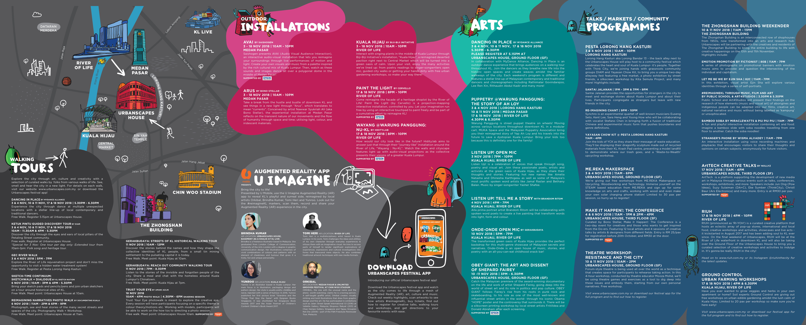

Overview
Grace curated and managed the festival's Arts segment, building a multidisciplinary programme of site-specific dance and theatre, experimental work, participatory experiences, environmental education and inclusive cultural programming.
Creative Vision
Accessibility, artistic experimentation, audience engagement, and opportunities for underserved communities.
Grace's Contribution
- Curated the Arts segment
- Managed the programme
- Developed a multidisciplinary line-up spanning performance, participation and environmental education
Selected Imagery



Outcomes
[PLACEHOLDER: Add outcomes only if confirmed]
Press & Video
[PLACEHOLDER: Add press or video links if available]